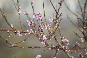

Réflexions sur Samare 1/5
Il est temps pour moi de me replonger dans Samare. Rappelez-vous, il s’agit de mon roman de fantasy utopique, initialement prévu en 3 tomes. J’en ai déjà posté un extrait sur le blog : le premier chapitre pour être plus précise. Après une longue pause dans l’écriture de cette histoire — j’avais déjà achevé le premier jet de l’intégralité du roman —, j’ai décidé de relire mes notes pour me préparer au travail de relecture et de correction. Tout cela se transforme finalement en réécriture complète de l’histoire. Je m’explique…
Ce qui ne va plus
Je me suis posée de nombreuses questions, allant même jusqu’à envisager de transposer l’histoire dans notre monde réel, mais futuriste, après une catastrophe qui aurait anéanti une partie de notre civilisation. Mais ça ne me plait pas trop ! Je n’aime pas les trucs post-apo où les mêmes causes reviennent sans cesse (à savoir une catastrophe nucléaire type guerre ou fuite de réacteurs, ou encore un épuisement total des ressources de la planète). Et pour être honnête, je ne voyais pas d’autre cause d’un apocalypse à invoquer !
Je reste donc cramponnée à mon monde inventé ! Épuisement des ressources il y aura, mais on sera en plein dedans et on aura encore le temps d’agir !
La magie et la science
En gros, mon idée était de créer un univers où l’on retrouve l’espèce humaine qui a abusé des ressources de son monde et se voit contrainte de vivre dans la misère. Sauf que certaines personnes ont trouvé des solutions pour remédier à leurs manques sans piller le peu de ressources qu’il reste et en respectant activement leur environnement.
Le but de ce contexte était de véhiculer le message suivant :
Notre monde sombre de plus en plus et si on continue à agir bêtement, on se retrouvera sans rien. Prenons dès maintenant notre courage à deux mains pour changer nos habitudes, quitte à revenir à d’anciennes pratiques plus respectueuses de l’environnement, et à adopter de nouvelles approches énergétiques pour sauver ce qu’il nous reste.
Tout cela est très bien (je veux d’ailleurs garder ce message !), mais dans mon histoire, il y avait un Arbre Monde magique capable de rendre les choses meilleures. Ça ne me plaît plus. Tout le message va se fondre dans le décor si les solutions apportées par mes personnages relèvent de la magie ! Je dois changer ça.
Il faut que je décrive une méthode scientifique suffisamment poussée pour que le lecteur puisse croire que c’est possible. Je dois trouver le moyen de créer un capteur d’énergie naturelle (ce que mes personnages utilisent pour produire de l’électricité et tout un tas d’autres trucs) capable de retransmettre la puissance absorbée dans la nature (à partir des calories diffusés par les animaux, du souffle du vent, de la poussée des plantes) en courant alternatif dans les habitations, etc.
Je me penche un peu sur la piste des ions, en sachant que je n’y connais rien du tout ! Mais je pense prendre un principe physique de la conductivité électrique et l’appliquer de manière suffisamment crédible à mon univers de fantasy, sans pour autant que ce soit vérifiable.
Je ne suis pas chercheur après tout ! Et si je découvrais un truc pareil, je n’en reviendrais pas ! Bref, je me concentre… Le tout c’est que le lecteur puisse croire que mon générateur d’électricité est fiable et qu’il puisse espérer que dans notre monde à nous, quelque chose est peut-être possible aussi.
Le point de vue narratif
J’ai écris mon premier jet en alternant deux narrateurs internes. Je me suis rendu compte à la relecture qu’il y avait parfois des doublons (informations répétées par les deux narrateurs à des moments différents). C’est trop nul ! Alors j’ai pensé ne garder qu’un seul narrateur interne, qui aurait la possibilité de savoir ce qui se passe aussi quand il n’est pas présent dans la scène. Mais ça ne va toujours pas. Ce qu’il me faut, c’est un narrateur omniscient qui avance dans le récit en nous révélant les éléments que nous avons besoin de connaître selon le point de vue du personnage le plus à même d’en parler. Cela me permettra d’aborder l’appareil électrique du point de vue des scientifiques qui savent de quoi ils parlent, par exemple.
Le début du roman
Dans mon extrait publié, l’histoire débute alors qu’Anne-Lys, mon héroïne, doit prendre le train pour quitter la Capitale, énorme cité capitaliste, pour rejoindre Samare, la petite cité écolo fondée par ses parents, aujourd’hui décédés. Le portrait de la Capitale est sombre pour montrer le contraste avec la vie bien verte des Samarins qui sont heureux comme tout.
Je voudrais changer ça. J’aimerais que la Capitale ne soit dépeinte que dans les propos des personnages, jusqu’à ce que l’un d’eux s’y rende physiquement. Comme ça, tout du long, le lecteur aura une mauvaise opinion de la Capitale et lorsqu’il y mettra les pieds avec le personnage, il se rendra compte qu’il s’agit en fait d’une copie de notre monde occidental ! Normalement, à ce moment-là, il commencera à vraiment réaliser que ce serait bien de faire quelque chose pour améliorer notre monde… Bonne idée, non ?!
Ce que je veux garder
La relation des deux personnages principaux
J’ai pensé à Samare, au début, en écoutant une chanson d’Anathema, Electricity. J’ai tout de suite imaginé mon personnage principal, Rena, affublé de ses ailes végétales et enveloppé de faisceaux électriques empêchant quiconque de s’approcher de lui.
J’ai ensuite imaginé une amitié difficile, rendue fragile par un secret, celui de la condition physique de Rena. Il ne pouvait plus être ami avec les autres parce qu’il ne voulait pas leur avouer qu’il était un monstre ! Et puis la chanson d’Anathema parlant d’amour, je n’ai pas pu m’empêcher de prolonger le vice en incrustant une amie plus importante que les autres, aimée depuis toujours en fait. Et voilà ! J’avais la relation de mes personnages : amitié ambigüe rejetée par l’un des deux protagonistes à cause de son secret.
C’est tout ce que j’aime ! Je suis une grande sentimentale. Je dois absolument garder cette trame pour la nouvelle version de Samare.
Quelques points mystiques
Je veux éliminer la magie, oui, pour que la science prime, mais il restera néanmoins quelques points mystiques. Le guide spirituel prénommé Martha est important. Du moins, j’aimerais bien. À vrai dire, je devrais pouvoir m’en débarrasser, mais j’en suis incapable. Je l’aime trop ! Je vais lui trouver une place dans l’intrigue ! Niark !
La guérison miraculeuse de Rena est importante aussi. Scientifiquement (ou plutôt médicalement), les personnages vont tout faire pour le « ramener », mais ils n’y parviendront pas. C’est pour montrer que même s’ils ont réussi à capter l’énergie de la nature et à s’en servir, les humains ne sont toujours rien dans le tout cosmique, on va dire. Je ne veux pas que l’Homme soit vu comme appartenant à une espèce supérieure. Surtout pas ! Donc c’est la Nature dans tout son ensemble qui aura le dernier mot. L’Homme ne peut pas ramener les morts à la vie tout seul, la Nature, oui.
Une confrontation avec la réalité
Deux lieux sont importants dans mon histoire : Samare et la Capitale. Ce sont deux opposés. Deux extrêmes. D’ailleurs, les gens qui y vivent ne se privent pas pour se critiquer les uns les autres. Les Capitains vont même jusqu’à parler de terrorisme parce que les Samarins essayent de diffuser leurs idées aux autres cités pour éviter la destruction des forêts, des mers, etc.
J’aimerais travailler sur les mots pour parler de ce dualisme. J’aimerais montrer que dans l’histoire, les véritables terroristes sont les bourgeois du centre riche de la Capitale qui exploitent tout ce qu’ils peuvent et ruinent la vie des plus démunis. J’aimerais que le lecteur y voit un parallèle avec les injustices sociales de notre société, de notre système et, plus généralement, de notre monde capitaliste.
Mais je ne maîtrise pas vraiment tous ces sujets. J’ai des pensées parfois assez extrémistes et je ne voudrais pas m’embourber dans un bourbier, justement, et entacher le reste de l’histoire. Alors cette position reste pour l’instant en suspens.
Dans tous les cas, mon but est de créer un univers où il fait bon vivre et où l’on a plaisir à se plonger pour découvrir une histoire divertissante, plaisante, qui demande un peu de réflexion et qui permet d’apprécier la beauté de la Nature et de l’amour. Ça ne fait pas trop fleur bleue, ça va ?
Au travail !